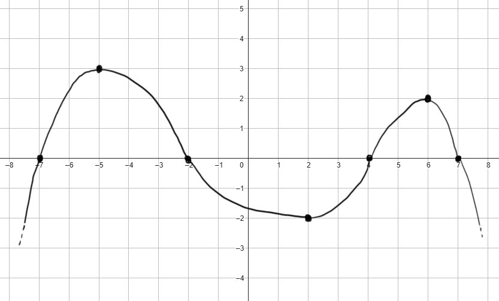

Calcolare il seguente integrale
\[
\int \dfrac{e^x + 2\,cos(x)}{e^x + 2\,sin(x)}
\]
Soluzione:
\(ln\left(e^x + 2\,sin(x)\right)\)
Individuare gli intervalli di monotonia della funzione
\[
f(x) = x^3 +5\,x^2 + 7x +6
\]
Soluzione:
Il dominio della funzione è \(D = \mathbb{R}\).
La derivata è \(f'(x) = 3x^2 +10\,x + 7\).
La funzione è
-
crescente per \(x \in \left(-\infty\,,\,\,-\dfrac{7}{3}\right) \cup \left(-1\,,\,\,+\infty\right)\)
-
decrescente per \(x \in \left(-\dfrac{7}{3}\,,\,\,-1\right)\)
Consideriamo la funzione \(f\) rappresentata nel seguente grafico

Stabilire se le seguenti affermazioni sono vere oppure false.
Motivare la propria risposta.
-
La funzione \(f'\) è positiva per \(x \in (-7\,,\,\,-2)\)
-
La funzione \(f'\) si annulla per \(x = 4\).
Indichiamo con \(F\) una primitiva di \(f\), ovvero una funzione tale che \(F' = f\).
-
\(F\) è decrescente per \(x \in (-2\,,\,\,4)\)
-
\(F\) è crescente per \(x \in (6\,,\,\,7)\)